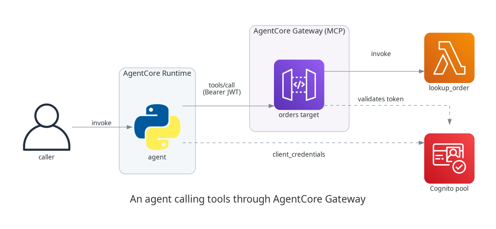

Giving your agent tools with AgentCore Gateway
TL;DR;
How to put AgentCore Gateway in front of an existing Lambda so an agent can call it as an MCP tool, with Cognito issuing the JWT the gateway validates, so the endpoint is authenticated from the first deployment.
SOURCE CODE - All code for this post is available at: https://github.com/levantar-ai/demos/tree/main/agentcore/02-gateway
Longer version
The agent from the first post could only echo. The way agents become useful is tools, and the way tools have standardised is MCP. The problem is that the systems agents need to reach, your internal APIs, your Lambdas, your SaaS integrations, are not MCP servers and nobody wants to write and host a fleet of them.
That is the job of AgentCore Gateway. You point it at things you already have (Lambdas, OpenAPI specs, API Gateway stages) and it presents them to agents as a single MCP server, handling the protocol, the auth and the tool schemas. The agent sees a list of tools, the gateway routes each call to the right backend.
This post puts a gateway in front of one Lambda, an order lookup, and has the agent from post 01 answer order questions with it:

1 - The tool
The backend is a plain Lambda, no MCP anywhere in it. It takes an order id and returns what it knows:
ORDERS = {
"42": {"status": "shipped", "carrier": "DPD", "eta": "2026-07-28"},
"43": {"status": "picking", "carrier": None, "eta": "2026-07-30"},
"44": {"status": "delivered", "carrier": "Royal Mail", "eta": None},
}
def handler(event, context):
order_id = str(event.get("order_id", ""))
order = ORDERS.get(order_id)
if order is None:
return {"error": f"order {order_id} not found"}
return order
The gateway invokes it with the tool arguments as the event, so a Lambda
that already takes its inputs as top-level event fields and returns JSON
needs no changes. A Lambda written for another event shape, API Gateway
style body and pathParameters for example, would need an adapter.
2 - Auth in front of the gateway
The gateway supports three authorizer types, CUSTOM_JWT, AWS_IAM and
NONE. This demo uses CUSTOM_JWT, so the gateway validates a bearer
token on every call.
It is worth saying why auth appears here, in the tools post, rather than later. A gateway is the first thing in this series that is reachable from outside your account. Post 01's runtime was only invocable through the AgentCore API with IAM in front of it; a gateway is an HTTPS endpoint, and it invokes your Lambda. Standing that up without authentication, even as a demo, means publishing an endpoint that lets anyone run your function, and it teaches a shape that people copy.
There is also a practical reason not to defer it. authorizer_type is
immutable. A gateway created with NONE cannot be upgraded to
CUSTOM_JWT later, it has to be destroyed and replaced. Auth is not
something you can bolt on to this resource afterwards, so every post
after this one builds on a gateway that was authenticated from the first
apply.
IMPORTANT: this post deliberately keeps auth to the smallest thing that is actually secure, a Cognito pool and a bearer token. It is not the identity post. Agent identity, end-user delegation and outbound OAuth so the agent can act on someone's behalf all get their own post later in the series, which builds on the pool set up here rather than repeating it. Each post covers one topic, and this one is about tools.
The agent is a machine with no human behind it, so it is a confidential
client using the OAuth client_credentials grant. Four Cognito resources
cover it, a user pool, a domain to host the token endpoint, a resource
server declaring the scope, and an app client:
resource "aws_cognito_user_pool_client" "agent" {
name = "demos-agentcore-02-gateway-agent"
user_pool_id = aws_cognito_user_pool.agents.id
generate_secret = true
allowed_oauth_flows = ["client_credentials"]
allowed_oauth_flows_user_pool_client = true
allowed_oauth_scopes = aws_cognito_resource_server.orders.scope_identifiers
}
generate_secret matters. The client_credentials grant is only for
confidential clients, so there is a secret, and it needs somewhere to
live. It goes into Secrets Manager and the runtime reads it with its
execution role, which keeps it out of the container image, out of the
environment variables and out of anything you would cat by accident:
environment_variables = {
GATEWAY_URL = aws_bedrockagentcore_gateway.orders.gateway_url
TOKEN_URL = "https://${domain}.auth.${region}.amazoncognito.com/oauth2/token"
TOKEN_SCOPE = "orders-api/invoke"
CLIENT_SECRET_ARN = aws_secretsmanager_secret.agent_client.arn
}
Endpoints and identifiers in configuration, the secret behind an IAM
permission. AWS_IAM is the other reasonable choice here and needs no
secret at all, because it uses the runtime role's own rotating
credentials. It is the better fit when the caller is always AWS. JWT is
the shape that keeps working when the caller is not, which is where this
series is heading.
3 - The gateway and its target
The gateway side is two resources, the gateway itself which is the MCP endpoint plus its authorizer, and a target which maps a backend into the tool list:
resource "aws_bedrockagentcore_gateway" "orders" {
name = "demos-agentcore-02-gateway-gw"
role_arn = aws_iam_role.gateway.arn
protocol_type = "MCP"
authorizer_type = "CUSTOM_JWT"
authorizer_configuration {
custom_jwt_authorizer {
discovery_url = "https://cognito-idp.${region}.amazonaws.com/${pool_id}/.well-known/openid-configuration"
allowed_clients = [aws_cognito_user_pool_client.agent.id]
}
}
}
resource "aws_bedrockagentcore_gateway_target" "orders" {
gateway_identifier = aws_bedrockagentcore_gateway.orders.gateway_id
name = "orders"
credential_provider_configuration {
gateway_iam_role {}
}
target_configuration {
mcp {
lambda {
lambda_arn = aws_lambda_function.tool.arn
tool_schema {
inline_payload {
name = "lookup_order"
description = "Look up the status of an order by its order id"
input_schema {
type = "object"
property {
name = "order_id"
type = "string"
description = "The order id to look up"
required = true
}
}
}
}
}
}
}
}
The tool schema you declare here is what agents will see over MCP, so it all matters, the name, description and input schema are what a model uses to decide when to call the tool and how to shape the arguments.
The agent's tools/list call shows the mapping in action:
{
"jsonrpc": "2.0",
"id": 1,
"result": {
"tools": [
{
"name": "orders___lookup_order",
"description": "Look up the status of an order by its order id",
"inputSchema": {
"type": "object",
"properties": {
"order_id": {
"description": "The order id to look up",
"type": "string"
}
},
"required": ["order_id"]
}
}
]
}
}
The runtime role gets one extra permission, to read the client secret and nothing else, least privilege in its clearest form, one action on one resource:
{
Sid = "ReadClientCredentials"
Effect = "Allow"
Action = ["secretsmanager:GetSecretValue"]
Resource = aws_secretsmanager_secret.agent_client.arn
}
The same principle runs through the other two roles, the gateway's role can invoke exactly one Lambda, and the runtime role can otherwise only pull its own image and write its own logs and telemetry.
NOTE: the gateway namespaces tool names as <target>___<tool> (triple
underscore), so lookup_order on the orders target becomes
orders___lookup_order. Resolve that fully qualified name exactly, two
targets can expose tools with the same short name and a fuzzy match will
happily pick the wrong one.
4 - Teaching the agent to call it
The agent uses the MCP Python SDK, and because the gateway takes a bearer
token there is nothing gateway-specific about the client at all. It is
the stock streamable HTTP transport with an Authorization header:
async def _call_tool(order_id):
headers = {"Authorization": f"Bearer {access_token()}"}
async with (
streamablehttp_client(os.environ["GATEWAY_URL"], headers=headers) as (read, write, _),
ClientSession(read, write) as session,
):
await session.initialize()
result = await session.call_tool(TOOL_NAME, {"order_id": order_id})
return result.content[0].text
No signing code, no JSON-RPC to assemble, no handshake to remember, the
SDK does the protocol. Do not hand-roll any of this, and in particular do
not reach into botocore.auth to sign requests yourself, that is
reimplementing with private APIs what a supported client already does.
Getting the token is the standard client_credentials exchange, and the
only part worth care is caching it, because otherwise every tool call
buys a Secrets Manager read and a token round trip:
def access_token():
if _token["value"] and time.time() < _token["expires_at"]:
return _token["value"]
client_id, client_secret = _client_credentials()
...
_token["expires_at"] = time.time() + payload["expires_in"] - EXPIRY_MARGIN
return _token["value"]
_client_credentials reads the secret from Secrets Manager with the
runtime execution role. The client secret is the one long-lived
credential in the stack, which is the honest cost of JWT over IAM, and
Secrets Manager is where it belongs rather than in configuration.
There is still no model in this agent, it extracts an order id from the prompt with a regex, because the thing under demonstration is the tool path, not the reasoning. A model slots into exactly this shape later in the series.
5 - Asking it questions
aws bedrock-agentcore invoke-agent-runtime \
--cli-binary-format raw-in-base64-out \
--agent-runtime-arn "$RUNTIME_ARN" \
--runtime-session-id "$SESSION_ID" \
--payload '{"prompt": "where is order 42?"}' response.json
cat response.json
{"result": "order 42: {\"status\":\"shipped\",\"carrier\":\"DPD\",\"eta\":\"2026-07-28\"}"}
The full round trip, agent to Cognito for a token, then agent to gateway to Lambda and back, came in at 8 seconds on a fresh session in one run, including the microVM cold start, the Secrets Manager read and the token exchange. A second call on the same session came back in 2 seconds, since by then the microVM is warm and the token is cached.
The tool handles the miss case the same way:
"is order 99 ok?" -> {"result": "order 99: {\"error\":\"order 99 not found\"}"}
The gateway endpoint is public, so it is worth checking that the authorizer is actually doing something. Posting a valid MCP request to it with no token, and again with a made-up one:
curl -s -o /dev/null -w "HTTP %{http_code}\n" -X POST "$GATEWAY_URL" \
-H "Content-Type: application/json" \
-d '{"jsonrpc":"2.0","id":1,"method":"tools/list","params":{}}'
no token: HTTP 401
bogus token: HTTP 401
The request never reaches the Lambda. That is the whole reason for setting this up now rather than later, the endpoint was authenticated before it ever answered anything.
Conclusion
One Lambda and two gateway resources turned a plain function into an MCP tool an agent can discover and call, without writing or hosting an MCP server, and a Cognito pool put a validated bearer token in front of it so the endpoint was never open. The client stayed a stock MCP client, which is the point, the auth is a header. The same target mechanism scales sideways, more Lambdas, OpenAPI specs or API Gateway stages all join the same tool list behind the same endpoint.
The next post gives the agent somewhere to keep what it learns, short-term session context and long-term extracted memory with AgentCore Memory. Agent identity proper, end-user delegation and outbound OAuth build on the pool set up here.
References:
- https://github.com/levantar-ai/demos/tree/main/agentcore/02-gateway
- https://docs.aws.amazon.com/bedrock-agentcore/
- https://registry.terraform.io/providers/hashicorp/aws/latest/docs/resources/bedrockagentcore_gateway
- https://docs.aws.amazon.com/cognito/latest/developerguide/cognito-user-pools-app-idp-settings.html
- https://modelcontextprotocol.io/